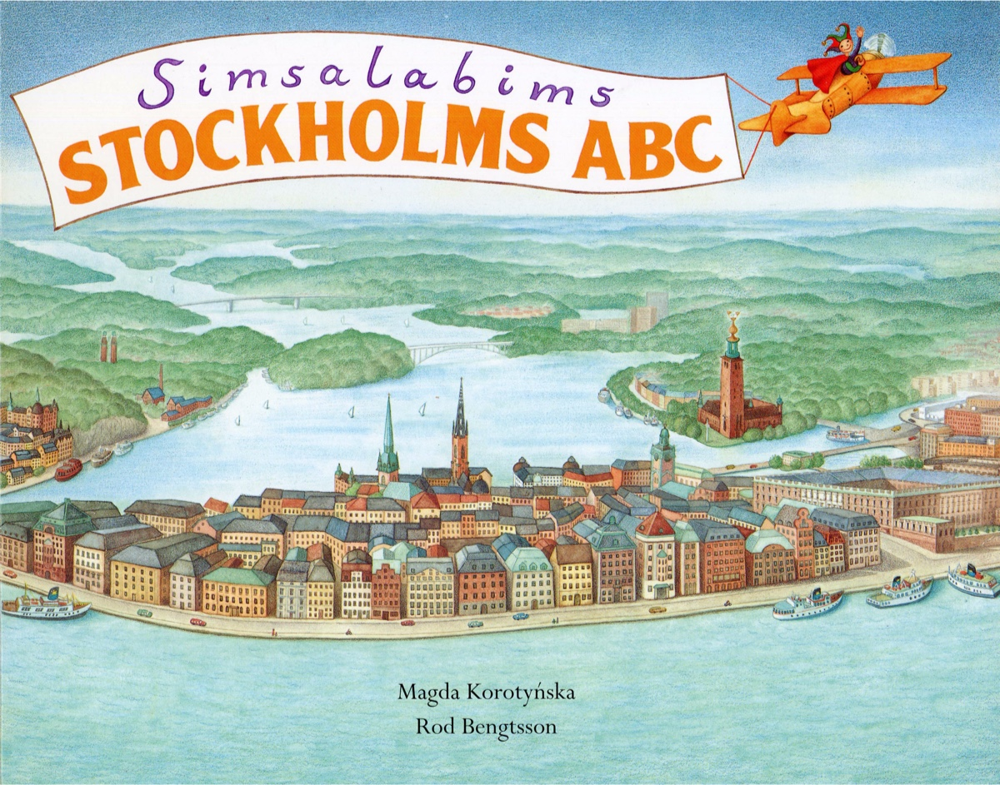
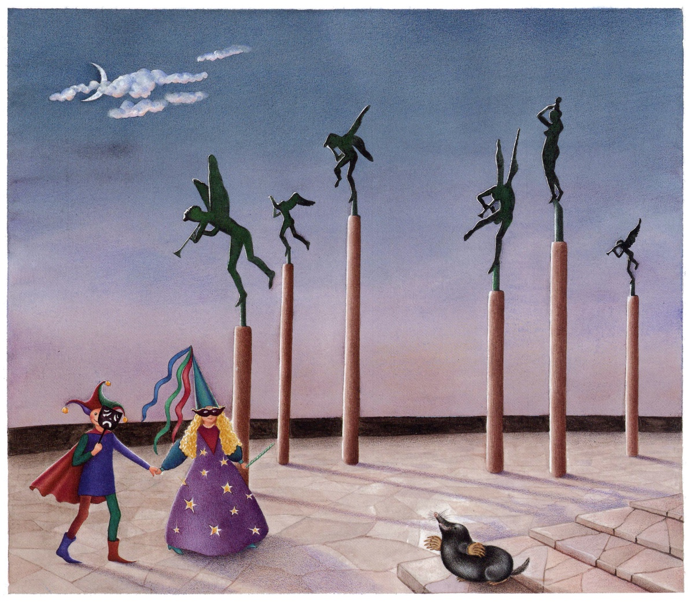
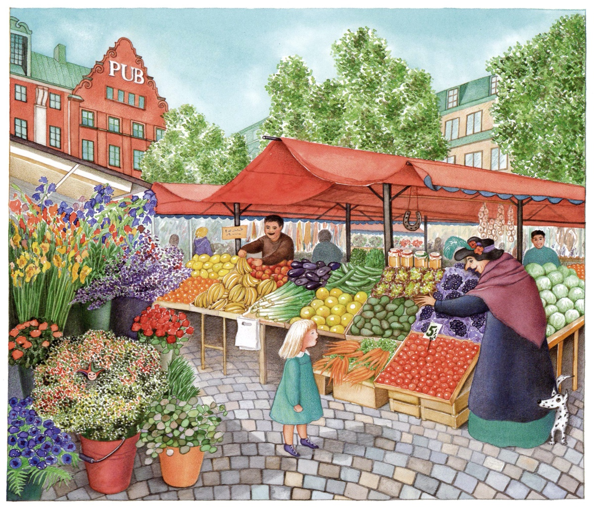
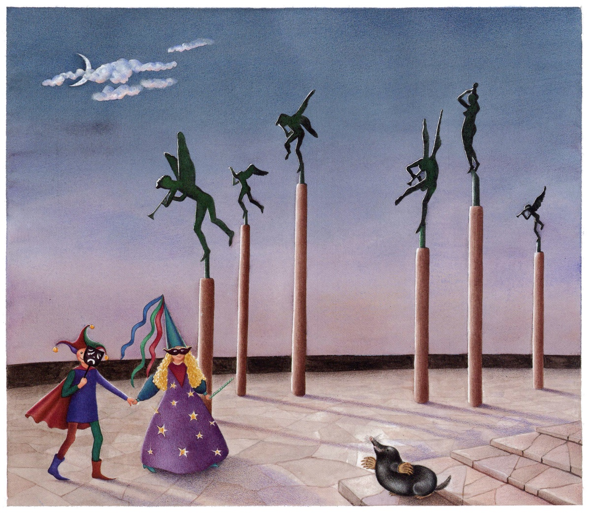
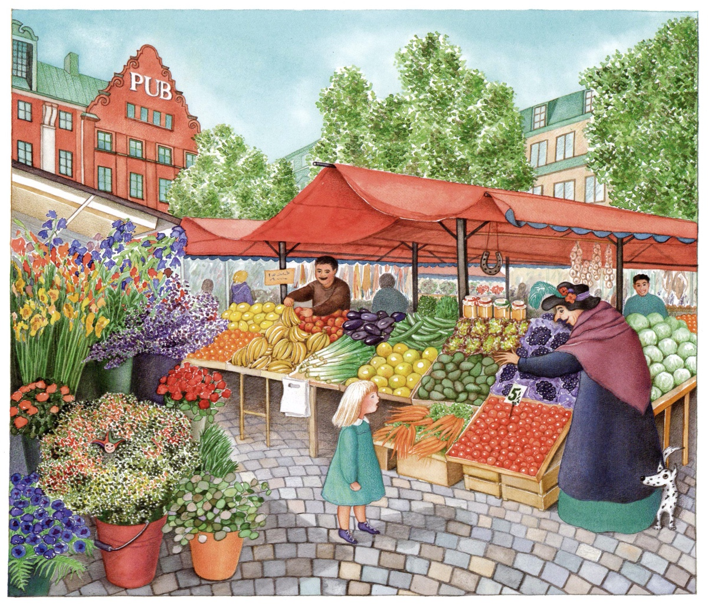
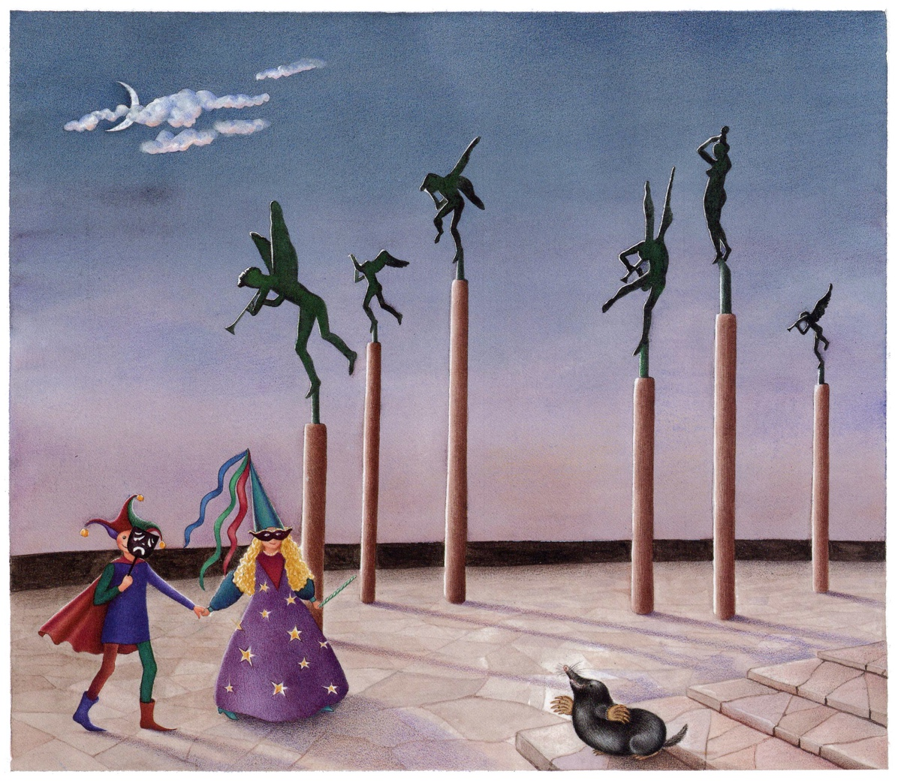
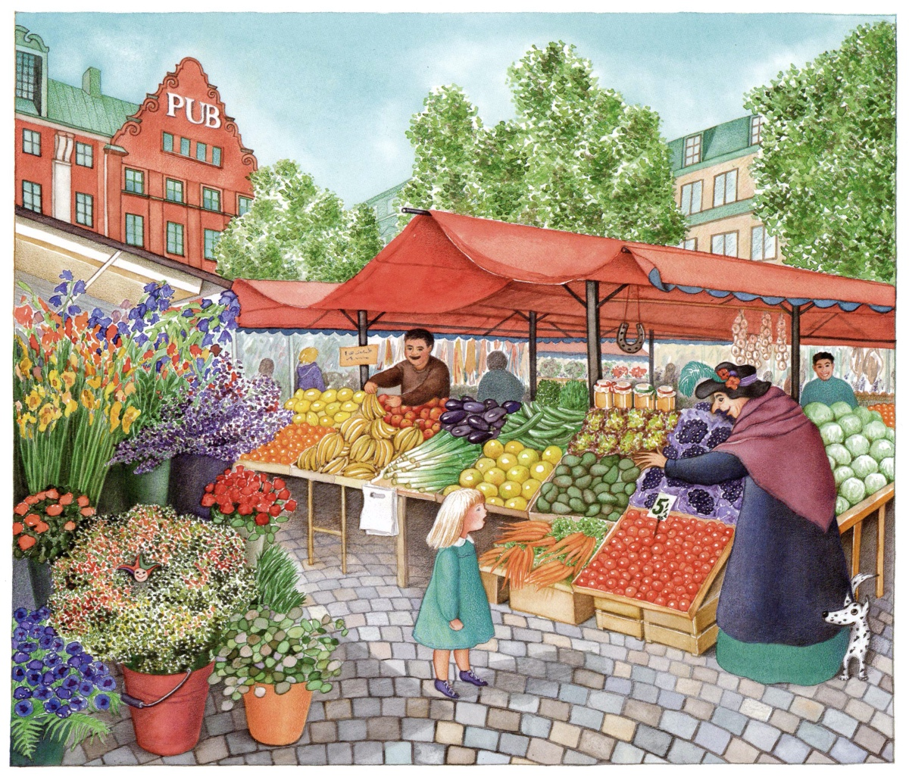

Simsalabims Stockholm ABC
Bonnier Carlsen 1994, 2000, En bok för alla 2009, 2016

 



"Magda Korotynskas and Rod Bengtsson's Stockholm ABC is without competition the Stockholm Book I read most times. We have a worn copy, sorted out from Medborgarplatsen's library, which offers many excursions directly from the bed to Gärdet, Hötorget, Millesgården and Hornsgatan."
Claes Sjödin, DN

